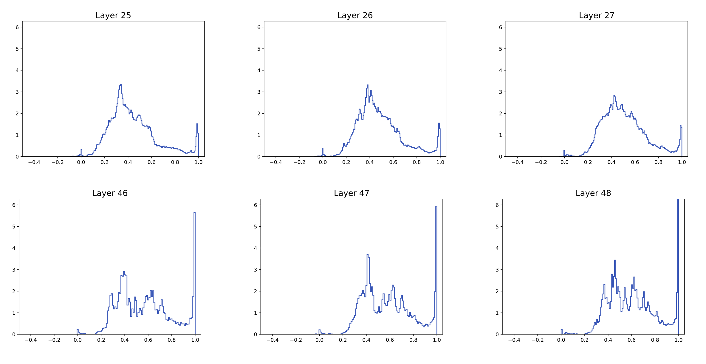
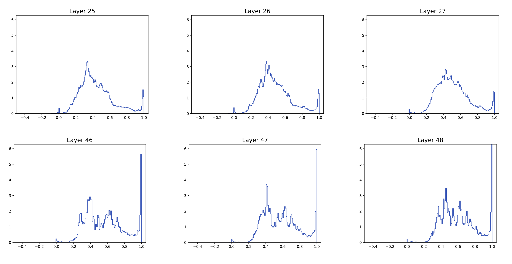

Introduction
The Transformer architecture, introduced in the landmark 2017 paper "Attention Is All You Need" by Vaswani et al., has revolutionized the field of natural language processing and beyond. At its core lies the self-attention mechanism, a powerful tool for capturing complex dependencies in sequential data that has proven remarkably effective across a wide range of applications.
Despite the well-documented empirical successes of Transformers, a rigorous mathematical understanding of their behavior remains an open challenge in the field. To address this gap, researchers have undertaken various analytical approaches, focusing on specific components of the Transformer architecture. One area of particular interest is the pure self-attention mechanism found in the Transformer's encoder.
A recent study by Borjan Geshkovski and colleagues offers a novel perspective on the inner workings of self-attention through the lens of interacting particle systems. Their research investigates the emergence of clusters in self-attention dynamics, shedding light on how the encoder processes and represents information. While this approach examines a simplified context, it offers valuable perspectives on the fundamental behavior of self-attention.
Of particular interest is a phenomenon observed in the dynamics of self-attention across layers:
 

Figure 1 illustrates the distribution of \(\langle x_i(t), x_j(t) \rangle\), where \(x_i(t)\) and \(x_j(t)\) represent the states of particles \(i\) and \(j\) at time \(t\) (or layer \(t\) in the discrete case). The initial distribution is symmetric and centered at 0, indicating that most particles begin in near-orthogonal configurations. As \(t\) increases, we observe a shift in the distribution's mass towards 1, suggesting a convergence of particles into clusters.
In this blog post, we will delve into the mathematical formulation of self-attention as an interacting particle system, and try to explain this clustering behaviour in a simplified architecture.
Modeling
Modeling Assumptions

To analyze the Transformer architecture effectively, we must reduce its complexity through strategic simplifications:
- Focus on Pure Self-Attention: Following Geshkovski et al., we concentrate solely on the self-attention mechanism, excluding the feed-forward layer and limiting our analysis to a single attention head.
- Weight Sharing: We use identical \(Q\), \(K\), and \(K\) matrices across all layers, with particular emphasis on the case where \(Q = K = V = I_d\) are \(d\times d\) identity matrices.
- Normalization Simplification: Layer normalization is replaced by projection onto the unit ball.
- Continuous Dynamics: We adopt a dynamical systems approach, transitioning from discrete layers to continuous dynamics.
These simplifications allow us to develop a more tractable model while preserving key aspects of the Transformer's behavior. By focusing on these core elements, we can gain deeper insights into the fundamental mechanisms driving the Transformer's performance.
From Self-Attention to Particle Dynamics
Self-attention computes a weighted sum of the input tokens to focus on relevant parts of the sequence. For particle \(i\), the attention mechanism assigns weights \(A_{ij}\) to each particle \(j\):
\[ A_{ij}(t) = \frac{e^{\beta \langle Q x_i(t), K x_j(t) \rangle}}{Z_{\beta, i}(t)} \]
where \(Z_{\beta, i}(t)\) is the normalization factor that ensures that the weights of the attention matrix \(A_{ij}\) sum row-wise to one.
\[Z_{\beta, i}(t) = \sum_{j=1}^n e^{\beta \langle Q x_i(t), K x_j(t) \rangle}\]
The update for particle \(i\) based on the attention mechanism is:
\[ x_i(t+1) = x_i(t) + \sum_{j=1}^n A_{ij}(t) V x_j(t) \]
Thus for continuous time \(\sum_{j=1}^n A_{ij}(t) V x_j(t)\) can be interpreted as the velocity \(\dot{x}_i(t)\) of the particle \(x_i\) at time \(t\).
Deriving the Key Equation
We still have to respect the norm in our modeling. The norm in the Transformer is the Layer Norm. We replace this by projection onto the sphere. We can reach this by projecting particle \(i\)'s velocity vector \(\dot{x}_i(t)\) onto the tangent space of \(x_i(t)\). This ensures that it stays on the unit sphere.
\[ \dot{x}_i(t) = P_{x_i(t)} \left(\sum_{j=1}^n A_{ij}(t) V x_j(t)\right) = P_{x_i(t)} \left( \frac{1}{Z_{\beta, i}(t)} \sum_{j=1}^n e^{\beta \langle Q x_i(t), K x_j(t) \rangle} V x_j(t) \right) \tag{SA with Q,K,V} \label{eq:SA_with_QKV}\]
Here, \(P_{x_i(t)}\) denotes the projection operator onto the tangent space of \(x_i\).
Clustering doesn't occure for every choice of \(Q,K,V\) thus we restrict ourself to certain choices of them. Our main focus will be on the simple case \(Q=K=V=I_d\):
\[ \dot{x}_i(t) = P_{x_i(t)} \left( \frac{1}{Z_{\beta, i}(t)} \sum_{j=1}^n e^{\beta \langle x_i(t), x_j(t) \rangle} x_j(t) \right) \tag{SA} \label{eq:SA}\]
Mathematically, the trajectories of the particles are given by the solution to the initial value problem, or Cauchy Problem, for the differential equations \((\ref{eq:SA})\) or \((\ref{eq:SA_with_QKV})\).
Let \((x_i(0))_{i \in [n]}\) be the initial positions of particles on the unit sphere \(\mathbb{S}^{d-1}\). Then there exists a unique solution \((x_i(\cdot))_{i \in [n]} \in C^0(\mathbb{R}_{\geq 0}; (\mathbb{S}^{d-1})^n)\) following the dynamics \((\ref{eq:SA})\) or \((\ref{eq:SA_with_QKV})\) where \(C^0\) denotes the set of continuous functions.
Clustering
We now try to partially answer the question observed in the introduction. Why does clustering occur in self-attention dynamics? You will observe that we will get many partial results but no result can answer even the simplest case \((\ref{eq:SA})\), where next to our simplifying consisting of leaving away linear layers, using projection, looking at one head, using weight sharing we are even setting \(Q=K=V=I\), in its entirety.
Clustering in High Dimension
Main result: In high dimensions (\(d \geq n\)), where \(d\) is the dimension of our vector space and \(n\) is the number of particles in this vectorspace, particles cluster to a single point as \(t \to \infty\).
Theorem 4.1: Let \(n \geq 1\) and \(\beta > 0\). Suppose \(d \geq n\). Consider the unique solution \((x_i(\cdot))_{i \in [n]} \in C^0(\mathbb{R}_{\geq 0}; (\mathbb{S}^{d-1})^n)\) to the Cauchy problem for \((\ref{eq:SA})\), corresponding to an initial sequence of points \((x_i(0))_{i \in [n]}\) distributed uniformly at random. Then almost surely there exists \(x^* \in \mathbb{S}^{d-1}\) and constants \(C, \lambda > 0\) such that
\[\|x_i(t) - x^*\| \leq Ce^{-\lambda t}\]
holds for all \(i \in [n]\) and \(t \geq 0\).
In fact, let \(Q\) and \(K\) be arbitrary \(d \times d\) matrices. Then the same result also holds for the solution to the corresponding Cauchy problem for \((\ref{eq:SA_with_QKV})\) with \(V = I_d\).
We will never get a result like this that holds for all \(V\), since we can show that for \(V = -I\) the particles tend to spread out over time, instead of clustering. The question remains whether such a result holds for some property that learned value matrices tend to have, or even for almost all \(nxn\) matrices
Quantitive analysis of clustering
Ideally, we would like to be able to predict for given parameters \(\beta, n\), at which timepoint \(t\) we can expect clustering to have happened. To get an approximation for this value we assume that our starting points \(x_i(t)\) are pairwise orthogonal. The next theorem tells us that the angles between the points stay the same during the evolution and gives us a differential equation for \(\gamma_\beta(t) = \langle x_i(t), x_j(t) \rangle\).
Theorem 4.6: Let \(\beta \geq 0\), \(d, n \geq 2\) be arbitrary. Consider an initial sequence \((x_i(0))_{i \in [n]} \in (\mathbb{S}^{d-1})^n\) of \(n\) pairwise orthogonal points: \(\langle x_i(0), x_j(0) \rangle = 0\) for \(i \neq j\), and let \((x_i(\cdot))_{i \in [n]} \in C^0(\mathbb{R}_{\geq 0}; (\mathbb{S}^{d-1})^n)\) denote the unique solution to the corresponding Cauchy problem for (SA). Then the angle \(\angle(x_i(t), x_j(t))\) is the same for all distinct \(i, j \in [n]\):
\[\angle(x_i(t), x_j(t)) = \theta_\beta(t)\]
for \(t \geq 0\) and some \(\theta_\beta \in C^0(\mathbb{R}_{\geq 0}; \mathbb{T})\). Furthermore, for (SA), \(\gamma_\beta(t) := \cos(\theta_\beta(t))\) satisfies
\[\begin{cases} \dot{\gamma}_\beta(t) = \frac{2e^{\beta\gamma_\beta(t)}(1-\gamma_\beta(t))((n-1)\gamma_\beta(t) + 1)} {e^\beta + (n-1)e^{\beta\gamma_\beta(t)}} & \text{for } t \geq 0 \\ \gamma_\beta(0) = 0 \end{cases} \tag{4.8} \label{eq:4.8}\]
Our hope now is that the function \(\gamma_\beta(t)\) is also a good predictor for non-orthogonal starting positions. If this is the case, we could, given \(\beta \gt 0\) and \(n \in \mathbb{N}\), determine time \(t^*\) at which \(\gamma_\beta(t^*) \approx 1\) and use this as a timepoint at which we can expect clustering to have occured.
To answer this question Geshkovski et al. prove the following theorem.
Theorem 4.7: Fix \(\beta \geq 0\) and \(n \geq 2\). Then there exists some \(d^*(n,\beta) \geq n\) such that for all \(d \geq d^*(n,\beta)\), the following holds. Consider a sequence \((x_i(0))_{i \in [n]}\) of \(n\) i.i.d. uniformly distributed points on \(\mathbb{S}^{d-1}\), and let \((x_i(\cdot))_{i \in [n]} \in C^0(\mathbb{R}_{\geq 0}; (\mathbb{S}^{d-1})^n)\) denote the unique solution to the corresponding Cauchy problem for \((\ref{eq:SA})\). Then there exist \(C = C(n,\beta) > 0\) and \(\lambda = \lambda(n,\beta) > 0\), such that with probability at least \(1 - 2n^2d^{-1/64}\),
\[\left|\langle x_i(t), x_j(t)\rangle - \gamma_\beta(t)\right| \leq \min\left\{2 \cdot c(\beta)^{nt}\sqrt{\frac{\log d}{d}}, Ce^{-\lambda t}\right\}\]
holds for any \(i \neq j\) and \(t \geq 0\), where \(c(\beta) = e^{10\max\{1,\beta\}}\), and \(\gamma_\beta\) is the unique solution to \((\ref{eq:4.8})\).
The problem with this theorem lies within the following calculation. If we have \(n=10\) points and want to be sure with a probability of \(\frac{3}{4}\) that \(\gamma_\beta(t)\) is providing a good aproximation to the true dynamics of our points, we need \(d \approx 6 \cdot 10^{185}\), since \[1 - 2n^2d^{-1/64} = 1- 2\cdot 10^2 \cdot (6 \cdot 10^{185})^{-1/64} \approx \frac{3}{4}.\] This is obviously unrealistic.
On the other hand experiments show that \(\gamma_\beta(t)\) indeed provides a good approximation.
For any \(t, \beta\) the color at that point depicts the probability that random inital starting points \((x_i(0))_{i \in [n]}\) following \((\ref{eq:SA})\) according to \(\beta\) will have clustered at time \(t\). The black line represents the prediction when clustering will occur according to the function \(\gamma_\beta(t)\).
When \(d\) is large, we can observe sharp boundaries between the blue area and the red area. This can be explained by the fact that \(n = 32\) is constant, and if \(d\) is large compared to \(n\), the particles are indeed almost orthogonal and behave according to \(\gamma_\beta(t)\).
When \(d\) is small, we observe larger white areas, where the probability of particles being clustered is positive, but not close to one. This can be explained by a long time metastable state that these particles are in.
Metastable Phase
For \(\beta = 9\) we observe that the points collapse to \(3\) clusters, while for \(\beta = 4\) the points collapse to \(2\) clusters. These clusters stay for a long time.
Removing the restraint \(d\geq n\) in the clustering theorem
The next natural step to answer the initial question of when clustering occurs is trying to remove the restriction \(d\geq n\) in Theorem 4.1.
Indeed, the following theorem tells us, that whenever \(\beta\) is small or large, clustering is happening.
Theorem 5.3: Fix \(d, n \geq 2\). For Lebesgue almost any \((x_i(0))_{i \in [n]} \in (\mathbb{S}^{d-1})^n\), there exist \(x^* \in \mathbb{S}^{d-1}\) and constants \(C_d, c > 0\) depending only on \(d\), such that whenever \(\beta \lesssim c n^{-1}\) or \(\beta \geq C_d n^2\), the solution \((x_i(\cdot))_{i \in [n]} \in C^0(\mathbb{R}_{\geq 0}; (\mathbb{S}^{d-1})^n)\) to the corresponding Cauchy problem for \((\ref{eq:SA})\) satisfies \[ \lim_{t \to +\infty} x_i(t) = x^* \] for all \(i \in [n]\).
Limitations
Are these results relevant to the Transformer?
To achieve concrete outcomes, we streamlined the transformer model to its fundamental components. We removed linear layers, substituted Layer Normalization with projection, imposed constraints on Q , K , V Q,K,V, and applied weight sharing across all layers, excluding consideration of multiple heads. The question of whether theoretical insights from this simplified model can be applied to practical scenarios remains unanswered.
Does Clustering matter?
Imagine using a transformer to translate a lengthy text. The original text is input into the encoder. If clustering occurs and thousands of tokens collapse into a single point, a significant amount of information would be lost, making a coherent translation highly unlikely. Preventing such extreme clustering is crucial. A theoretical framework that determines the optimal number of layers for a transformer's performance would greatly simplify its design.
Future Work
Open questions for future research:
- Do the dynamics enter a transient metastable state, where for \(\beta \gg 1\), all particles stay in the vicinity of \(m < n\) clusters for long periods before collapsing to the final cluster \(\{x^*\}\)?
- Can the conclusions of the Theorems be generalized to the case of random matrices \(Q, K, V\)?